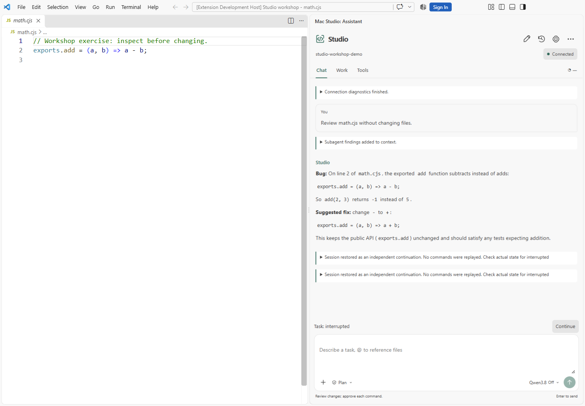

10 - Make Changes, Verify Them, and Recover Safely#
Time: 60–75 minutes. Requires: Lab 9, a tool-capable model, Node.js and the disposable studio-demo project.
Outcomes#
Observe reviewed changes, failing-to-passing checks, a checkpoint（检查点）, background work and interruption recovery. Separate model claims from actual execution evidence.
1. Establish a failing baseline#
In the terminal, from studio-demo:
node math.test.cjs
Expected: assertion failure; add(2, 3) returns -1, not 5. This failure is intentional. Ask Studio in Plan mode:
Inspect math.cjs, math.test.cjs, and usage.cjs. Explain the bug with file/line
references. Create a short plan. Keep exports.add unchanged and do not edit tests.
Do not run commands or propose executable changes yet.
Save those two constraints under Task details → Plan → Fixed constraints and inspect /context. Insert file references with @ completion or +. Plan mode blocks effectful tools at dispatch; a prompt alone is not the permission boundary.


Fig. 2 Historical 0.13 model review. The editor still contains a - b: a suggested fix is not an applied change or a passing test.#
2. Review and apply#
Approve the plan, use the default Auto mode, and ask:
Propose the smallest fix in math.cjs. Add a short comment to usage.cjs explaining
that add returns the sum. Group the source changes for review. Leave
math.test.cjs unchanged. Wait for me to inspect the diff before applying.
Open each Diff and check the paths/lines. Apply the reviewed group. Grouped operations support edits, creates, renames and deletes; this exercise needs only two edits.
Under Task details → Changes → Verification and checkpoints, save this recipe:
node math.test.cjs
node usage.cjs
Run verification, or choose Apply all and verify when changes are still pending. Approve each exact command and project directory. Expected: Arithmetic check passed, then 5. If a check fails, inspect the actual output before authorizing a bounded repair. Do not accept “tests pass” without an executed check.
3. Prove conflict detection and rewind#
Request another small source change. Before applying it, edit the same line yourself and leave it unsaved. Apply should refuse to overwrite the dirty/changed file. Resolve your experiment deliberately, re-read the file and obtain a fresh proposal.
Inspect a completed checkpoint. Rewind（撤销到检查点） restores tracked contents only when current contents match its recorded state. Make an intervening edit and confirm conflict detection. Do not discard your own work merely to satisfy the exercise.
Checkpoints do not roll back arbitrary shell effects, MCP writes or remote processes. If a grouped operation was partially applied, reconcile actual files before retrying.
4. Observe a background command#
The kit includes slow-check.cjs:
let seconds = 0;
const timer = setInterval(() => {
console.log(`tick ${++seconds}`);
if (seconds === 15) clearInterval(timer);
}, 1000);
Ask Studio to run node slow-check.cjs and approve it in the exercise project. After the default 10-second foreground threshold, Task details → Activity shows a job ID and output. Ask it to check that job rather than launch another copy. Identical live commands in the same task/directory reuse their ID.
Cancel a second run using its card and observe its final status. Cancellation requests termination of owned processes; it cannot promise to reverse remote effects or stop deliberately detached descendants.
5. Queue, steer and resume#
During a reply, Enter sends guidance for the next safe tool boundary; it does not start a parallel top-level task. Pause aborts the foreground request and cancels child investigations while retaining local records. Pause does not promise to terminate background commands: stop those explicitly from Task details → Activity. See Lab 13 for the mode boundaries and status strip.
After completing the exercise, save work, reload VS Code and load the chat from History. Pending work and old results should remain, but interrupted operations must not replay. Exact-command task approvals do not become permanent permissions after reload.
Verification can become stale（过期） after file edits, reload or uncertain completion. Re-run checks for fresh evidence. This version does not infer a complete build-system dependency graph.
Implementation checkpoints#
Concern |
Module |
Locate |
|---|---|---|
Permissions |
|
Mode, capability, plan and pending-edit gates |
Commands |
|
IDs, output bound, timeout, cancellation |
Durable chat |
|
Atomic snapshots, tool-result repair |
Project access |
|
Paging, line reads, ignore rules |
Grouped changes |
|
Snapshots, conflict checks, rewind |
Verification |
|
Actual check results and repair limits |
From source/, on any client OS:
node --test test/runtime10.test.js test/project11.test.js test/controller.test.js
Extension exercise: change the background threshold in your settings, rerun the harmless slow check and compare when its card appears. Restore the default afterward.
Acceptance: baseline failure, reviewed diff, executed passing output, unchanged tests, one conflict rejection and one cancelled job. Mark skipped drills as skipped.
Quiz: Can a successful hook replace a recorded verification recipe? Answer: No; these are separate evidence.